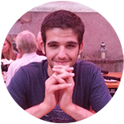

about
Alberto Scicali
A curious computer science student currently attending Rochester Institute of Technology. I like to work on various LeapMotion projects, including interactive games that can be experienced in a completely different way. I also greatly enjoy cooking and getting fat on food.